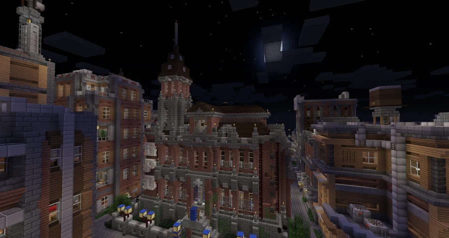

Broville Police Headquarters
The police headquarters recorded among the city’s public buildings.
Public building
Broville Police Headquarters is identified as the city’s police headquarters. The supplied documentation records the building by name and image without detailing its layout, internal facilities or history.



See also
Sources and references
- v11.4.4 maps, signs, books and items World records
- Broville Police Headquarters · Broville Wiki Community archive
Text adapted and expanded from Broville Police Headquarters (contributors and history, revision 4485). Adapted text is available under CC BY-SA 3.0.